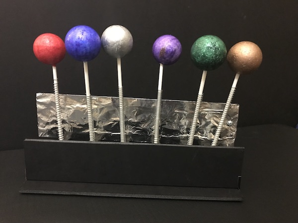
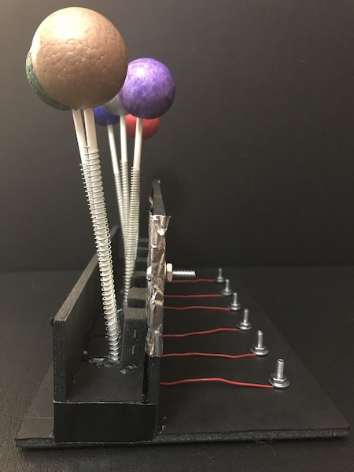

Other Switch Ideas (continued)
Next, try building something whimsical. All you need are objects that can conduct electricity and some imagination. Here's one that was built using metal springs, aluminum foil, lollipop sticks and styrofoam balls:
 